Vous nous contactez
Par téléphone ou formulaire en ligne.
Maison, appartement, succession, cave, garage, locaux professionnels... Nous vidons, trions, évacuons et nettoyons vos biens rapidement et proprement.
Vérifiez si nous intervenons dans votre secteur
Du particulier au professionnel, nous intervenons dans toute l'Alsace pour vider, trier et nettoyer vos espaces.
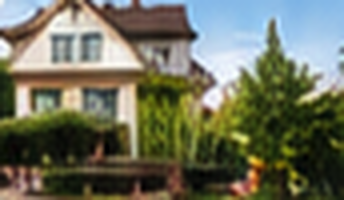
Débarras maisonMaison complète ou quelques pièces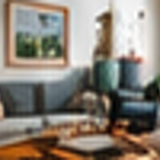
Débarras appartementStudio, logement, etc.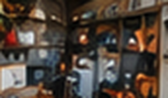
Cave, grenier & garageObjets, cartons, encombrants SuccessionTri et valorisation des biens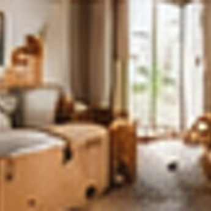
Après décèsIntervention discrète et respectueuse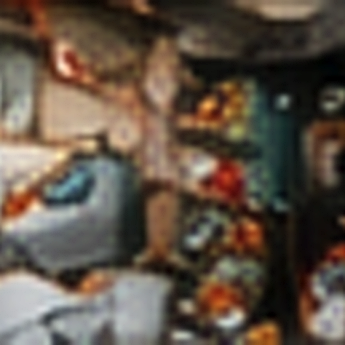
DiogèneLogement très encombré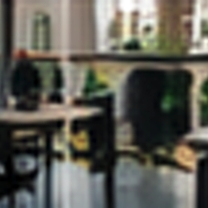
ProfessionnelsBureaux, commerces, locaux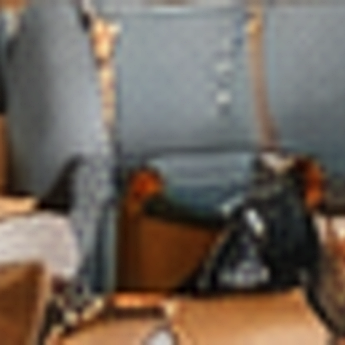
NettoyageAprès débarrasDéménagement, succession, vente immobilière, rénovation... Quelle que soit la situation, nous avons la solution.
Simple, rapide et sans stress.
Par téléphone ou formulaire en ligne.
Photos ou visite sur place selon le projet.
Un prix clair et détaillé avant intervention.
Tri, évacuation, valorisation et nettoyage.
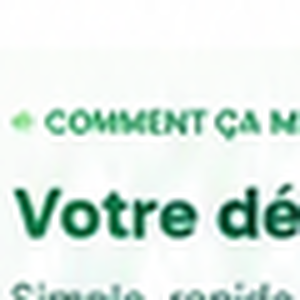
Avant d'évacuer vos meubles et objets, nous identifions ceux qui peuvent être réemployés, donnés ou valorisés.
Des débarras concrets à Strasbourg et en Alsace.
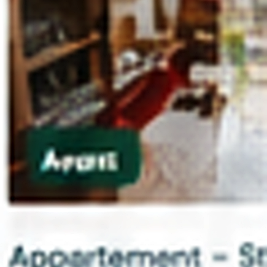
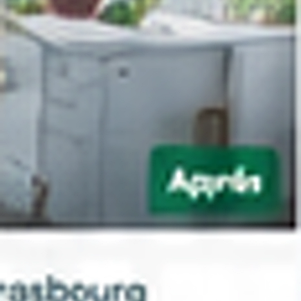
Appartement – Strasbourg
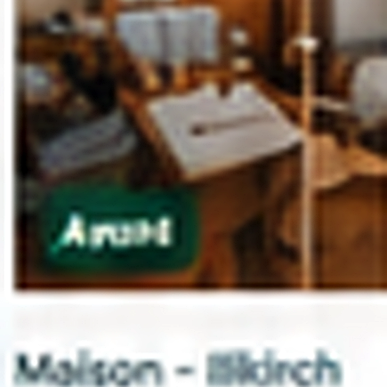
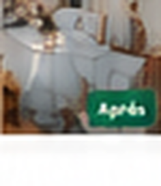
Maison – Illkirch
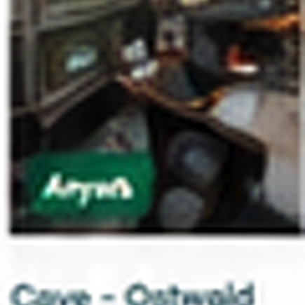
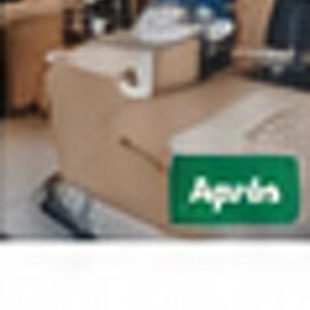
Cave – Ostwald
Photos avant / après extraites de la maquette — les originaux haute définition seront fournis par l'entreprise.
4,9/5 (150+ avis Google)
« Équipe très professionnelle, discrète et efficace. Le débarras de notre maison s'est fait en 2 jours. Nous recommandons sans hésiter ! »
« Service impeccable, du devis au nettoyage. Tout a été géré avec sérieux et bienveillance. Merci encore ! »
« Une équipe humaine et respectueuse. Ils ont vidé l'appartement de ma mère après son décès. Un grand merci. »
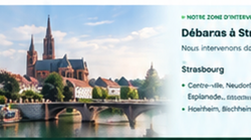
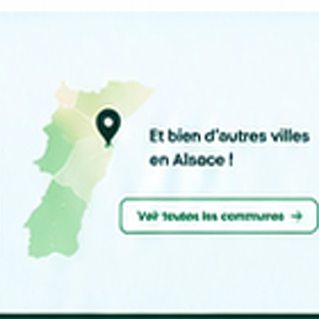
Nous intervenons dans toutes les communes du Bas-Rhin et en Alsace.
Nous vidons. Nous trions. Nous valorisons. Nous évacuons. Nous nettoyons.
Demander mon devis gratuit →06 12 34 56 78
Le prix dépend du volume à évacuer, de l'étage, de l'ascenseur, de la distance entre le camion et l'entrée, du type de biens et du niveau de tri souhaité. Un devis gratuit est établi après échange et, si besoin, après visite.
Oui. Le devis est gratuit et sans engagement. Il détaille ce qui est inclus dans la prestation et ce qui expliquerait une variation de prix.
Oui, et c'est même la façon la plus rapide d'obtenir une estimation. Quelques photos des pièces et des encombrants permettent de cadrer le volume avant l'échange téléphonique.
Oui. L'absence d'ascenseur, l'étage et la largeur des escaliers sont pris en compte dans le devis : c'est un facteur de temps d'intervention, pas un refus.